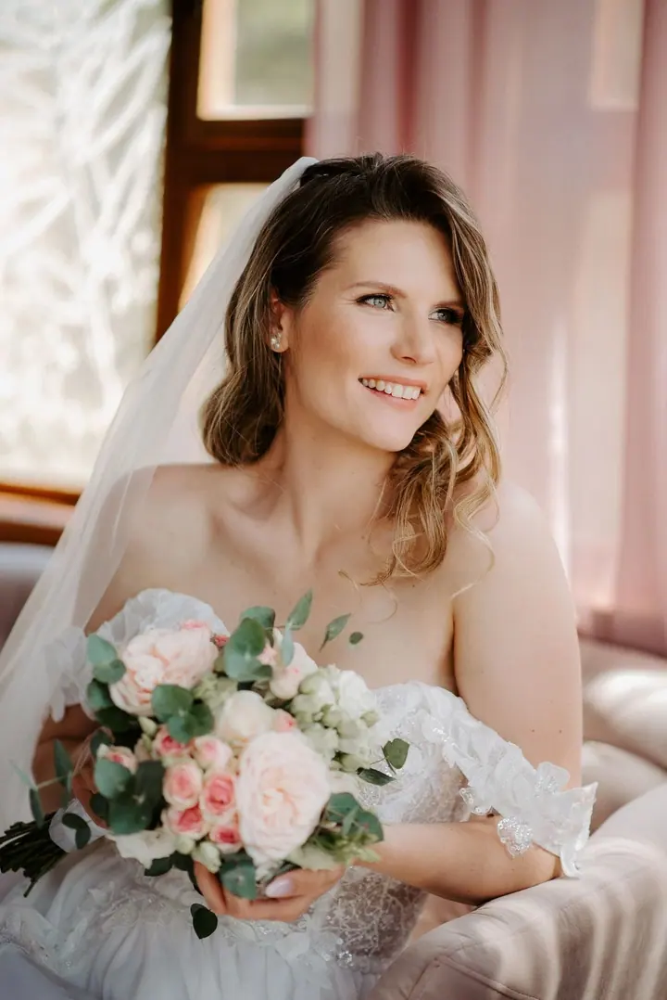
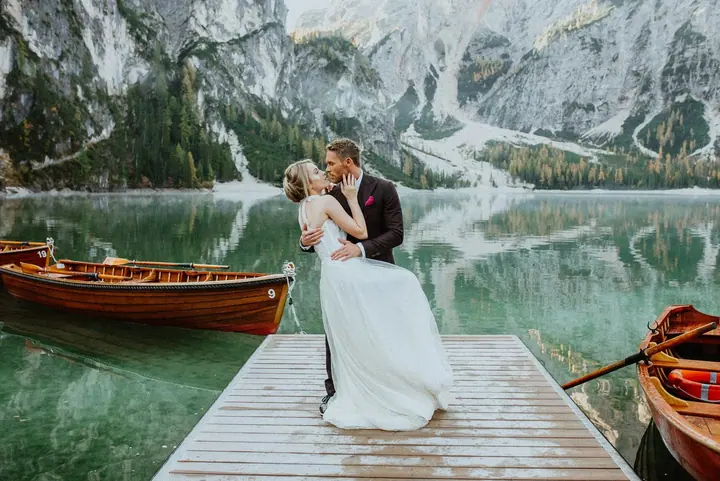
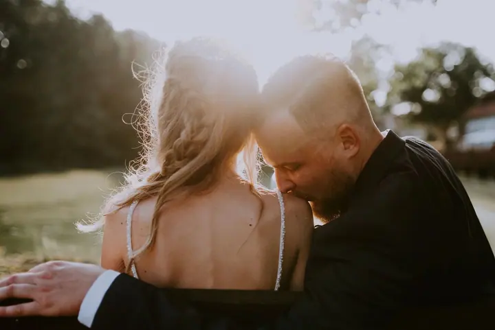

jedna
Svatební focení
Celý váš svatební den od příprav až po večer, podle balíčku 5 až 14 hodin focení. Ke každé svatbě mám individuální přístup od prvního setkání až po finální úpravu fotografií.

Svatební fotografka · Olomouc a okolí, celá Česká republika

Jmenuji se Elena Šenková a jsem svatební fotografka z Olomouce. Nejradši fotím svatby, vztahy a lásku. Ke každé zakázce mám individuální přístup a dělám všechno pro to, abyste si užili nejen fotky, ale i samotné focení.
Více o mně
Co fotím
jedna
Celý váš svatební den od příprav až po večer, podle balíčku 5 až 14 hodin focení. Ke každé svatbě mám individuální přístup od prvního setkání až po finální úpravu fotografií.
dvě
Portrétní focení, při kterém hledám ten nejlepší úhel pohledu a světlo, ve kterém vám to bude slušet.
Kromě svateb fotím i rodiny. Stejně klidně a s plnou pozorností, abyste si užili i samotné focení.
Své zkušenosti předávám dál. Pro fotografy připravuji workshopy i individuální lekce.
Fotím svatby, vztahy a lásku
Za objektivem
Jmenuji se Elena. Vystudovala jsem v Praze obor Fotografická tvorba a fotografií se profesionálně zabývám už víc než 10 let. Nejradši fotím svatby, vztahy a lásku.
Svou práci miluji a každé zakázce věnuji plnou pozornost. Chci, abyste byli spokojeni s výsledkem a zároveň si užili celý den, ne jen čekali na fotky. Proto se vidíme už před svatbou a všechno si spolu v klidu probereme.
Své zkušenosti předávám dál jako učitelka na soukromé škole a na workshopech pro fotografy. Napsat mi můžete česky, anglicky i rusky.
Elena
Vyberete si balíček a pošlete mi datum a místo vaší svatby. Odpovím, jak nejdřív to bude možné.
Před focením se spolu poradíme o průběhu dne a vašich představách. Spolupráci stvrdíme smlouvou o vytvoření svatebních fotografií.
Podle zvoleného balíčku s vámi strávím 5 až 14 hodin a budu u všech důležitých okamžiků.
Fotky pečlivě upravím a předám podle balíčku nejpozději do 3 týdnů, 1 měsíce nebo 1,5 měsíce.
Portfolio
Otázky
Mám tři balíčky: BASIC za 30 700 Kč (5 až 7 hodin, 250 fotek), CLASSIC za 35 500 Kč (8 až 10 hodin, 330 fotek) a PREMIUM za 42 300 Kč (11 až 14 hodin, 500 fotek). Ceny už zahrnují 35% slevu, kterou poskytuji za to, že smím fotky použít ve své prezentaci.
Ano. U balíčků BASIC a CLASSIC je v ceně doprava po Olomouci a okolí (prvních 30 km), dál účtuji cestovné 5 Kč/km, nebo 3 Kč/km. U balíčku PREMIUM je doprava po celé ČR v ceně.
Záleží na balíčku. U balíčku BASIC je to nejvýš 3 týdny, u CLASSIC nejvýš 1 měsíc a u PREMIUM nejvýš 1,5 měsíce.
Napsat mi můžete česky, anglicky i rusky. Ráda vám odpovím na všechny dotazy.